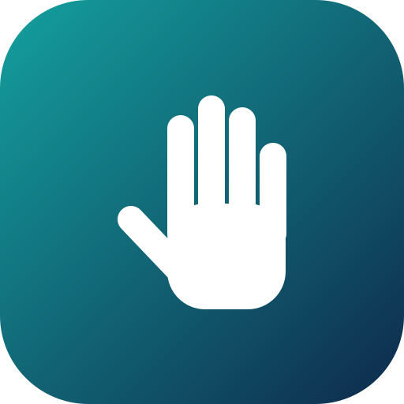

Handly
ASL to text, on camera and on video calls
Show one hand to the camera. Hold a letter or number steady until the bar fills and it is added to your text.
Video call
Share your ID with a friend, or enter theirs. While you sign, the text of your signs appears on their screen, and theirs on yours. Start your camera before calling or answering.
Your text
Words
Handly already knows the built-in words below. To add your own, type the word and tap Record word: after a 2-second countdown, sign right away. Record each word 3 to 5 times, changing it slightly each time. Two-handed signs work too. Your own recordings take priority over the built-in ones.
Built-in words and how to sign them
- HELLO: open palm, wave side to side
- STOP: open palm facing the camera, held still
- THANK YOU: flat hand, move down and forward
- PLEASE: flat hand, move in a circle
- SORRY: fist, move in a circle
- YES: fist, nod up and down
- BATHROOM: fist, shake side to side
- GOOD: thumbs up
- NO: index and middle fingers, tap them to your thumb
- I LOVE YOU: thumb, index finger, and pinky up
- WATER: "W" (index, middle, and ring fingers up)
- EAT: fingertips pinched together, move upward
- WAIT: index finger pointing up, held still
- WHERE: index finger, shake side to side
Teach it your hand
Built-in rules cover about 20 signs. Letters like M, N, T, E, G, H, K, P, Q, R, X and C are too similar for rules, so record them here: pick the sign, hold it in view, tap Record, and slowly turn your hand a little. Samples stay in this browser and take priority over the built-in rules. J and Z need motion and are not supported yet.